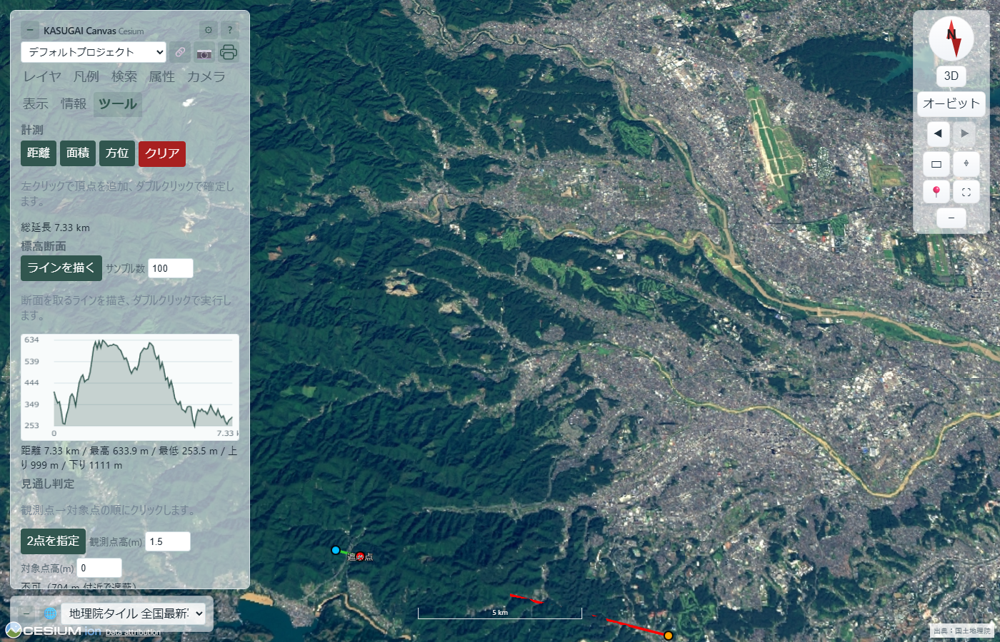
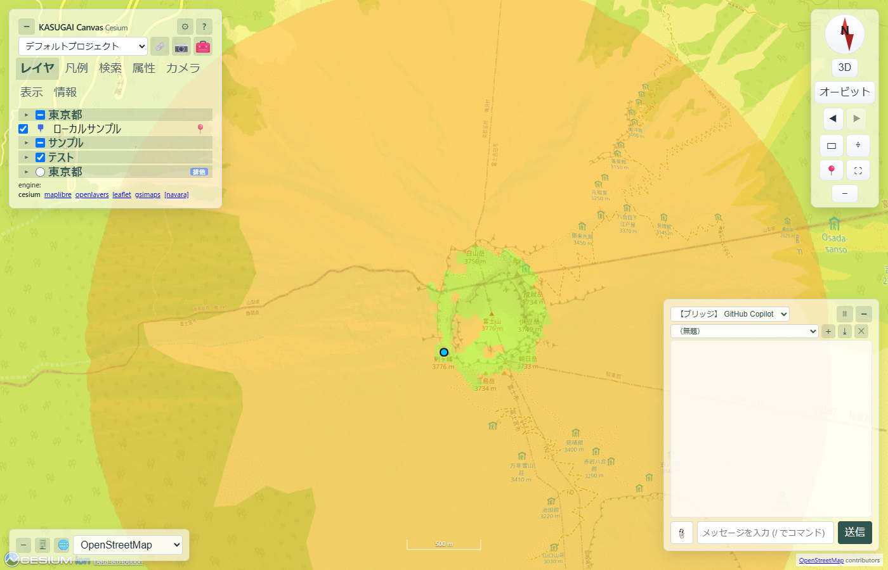

レイヤパネルの🧰ボタンで開くツールドックの「見通し判定」パネルです。すべてブラウザ完結・静的配信のみで動作します。
使い方
👁️ 見通し判定（LOS）
観測点・対象点（各地表からの高さオフセット指定可）を指定すると、160点の地形サンプリングと視線を比較して「可 / 不可（遮蔽点の距離つき）」を判定します。視線は可視部=緑・遮蔽部=赤で描画され遮蔽点がマークされます。
🗼 可視範囲（viewshed・Cesium のみ）
観測点を1クリックで、放射状レイ（方位数×距離サンプル）上の地形標高を一括サンプリングして可視/不可視域を判定し、可視=緑・不可視=赤・標高不明=灰の可視性マップを地表へドレープ表示します。半径（100〜50000m）・方位数（16〜360）・レイあたりサンプル数（16〜256）に上限付きで指定でき、総サンプル数は自動で上限（地形ON時12000点・地理院APIフォールバック時1024点）に丸めます。「建物等も遮蔽(近似)」を ON にすると drillPickFromRay で描画済み3D Tiles等の遮蔽物を追加判定します（キャスト数上限384・計算コストのため近似）。地球曲率は直線視線モデルで考慮されます。


対応エンジン
見通し判定: Cesium・MapLibre・OpenLayers・Leaflet・GSI Maps。可視範囲: Cesium のみ。Navara は未提供です。AI からは lineOfSight・viewshed で実行できます（5-3 AI ツール仕様）。
設定方法
このツールは .kasc の設定行を持ちません（UI 操作のみです）。関連するレイヤー設定は 6-2 インスペクター を参照してください。